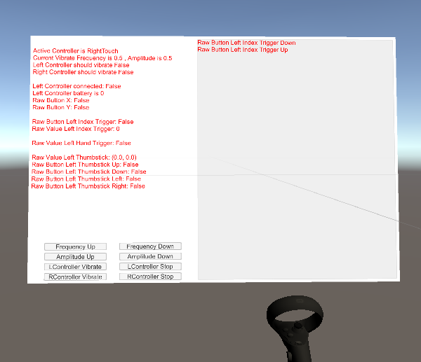
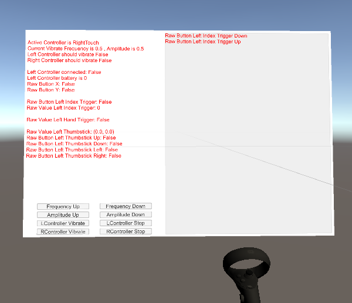

DebugScene.Input
位于 YVR/Scenes/Input.scene
- 另请参见：
Input 场景是用于说明和调试 YVRInput 接口：

所有输入的可持续状态将会显示在面板的左侧，如：手柄电池 / 按键是否按下 / 索引触发位置。
所有输入的瞬时状态将显示在面板的右侧，如：手柄点击下降 / 上升。
所有关于手柄振动的设置都显示在面板左半部分的底部。用户可以通过这些按钮修改振动的频率 / 振幅，或切换振动状态。
位于 YVR/Scenes/Input.scene
Input 场景是用于说明和调试 YVRInput 接口：

所有输入的可持续状态将会显示在面板的左侧，如：手柄电池 / 按键是否按下 / 索引触发位置。
所有输入的瞬时状态将显示在面板的右侧，如：手柄点击下降 / 上升。
所有关于手柄振动的设置都显示在面板左半部分的底部。用户可以通过这些按钮修改振动的频率 / 振幅，或切换振动状态。